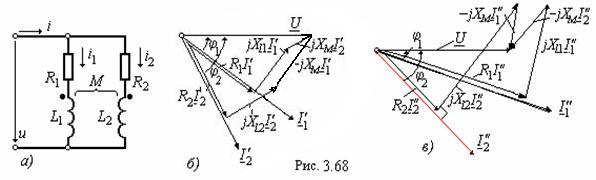

2.6.8. Анализ цепей с параллельным включением двух индуктивно связанных катушек
Подведем к зажимам цепи (рис. 2.68, а) с параметрами: R1, R2, L1, L2, M синусоидальное напряжение u = Umsinωt, рассчитаем токи I1, I2, I и построим векторные диаграммы напряжений и токов при согласном и встречном включении двух индуктивно связанных катушек.  |